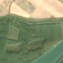
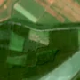

3,4 ha · Măcin
văzută schimbată prima dată pe 26 apr. 2026


Autorizația cea mai apropiată nu acoperă tăierea: autorizația începe după ce schimbarea se vedea deja.
APV 2600129700290 · Ocolul Silvic Măcin, valabilă 21 aug. 2026 – 26 oct. 2026, la 0 m
Terenul: pădure de stat, după amenajamentul silvic publicat.
Ce se vede în poze: În poza detaliată din 2021 zona marcată era acoperită de pădure deasă. În poza «după» apare o pată deschisă la culoare, cu margini drepte, în timp ce pădurea din jur rămâne verde, deci copacii par tăiați.
în arie protejată: Brațul Măcin, Dunărea Veche - Brațul Măcin